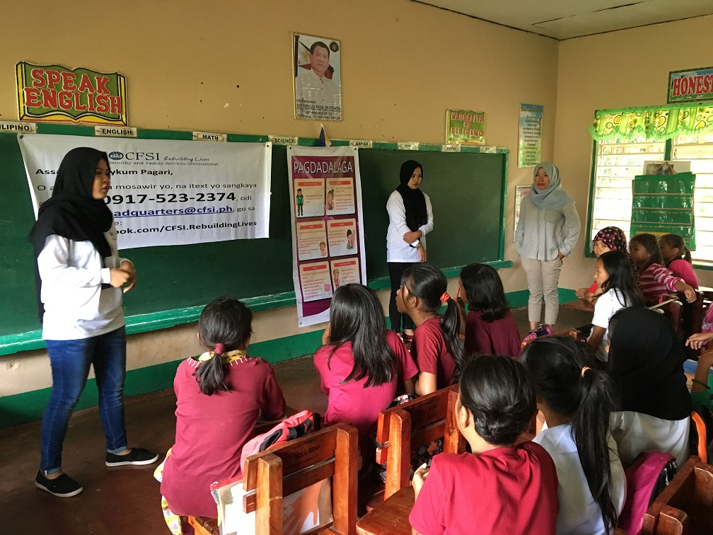

Seeking durable solutions for Marawi displaced
Nine months after the end of the armed conflict in Marawi City, it is estimated that more than 64,000 displaced families (over 320,000 people), from Lanao del Norte and surrounding municipalities have returned to their former homes. Nonetheless, there are still over 69,000 people in host communities,evacuation centres, and transitional sites waiting to return home. Close to 90 per cent of those who continue to be displaced are staying in host communities. The Government-led response continues to verify the numbers and status of those affected by the conflict, partnering with the UN and humanitarian actors to address the profiling and beneficiary selection of internally displaced persons (IDPs).
For those who have returned, there is still a long road ahead. The response has so far yielded positive results, with 72 return barangays in Marawi City and other municipalities in Lanao del Sur Province working to address protection concerns, especially for school age-children who are at risk of dropping out of school, recruitment by extremist groups, and exposure to increasing poverty. A priority for returnees is decent employment and sustainable livelihoods, which would contribute to stabilizing incomes, enhancing security and initiate long-term socio-economic recovery.

Credit: Task Force Bangon Marawi Barangay Moriatao, Loksadatu (18 July 2018) - Residents attend a town hall meeting in Marawi City led by the Office ofh te Presidential Adviser on the Peace Process (OPAPP).
Supporting socio-economic recovery in Marawi
The Department of Social Welfare and Development (DSWD) has been providing return packages to families consisting of food packs and non-food items. In addition, financial assistance of PhP5,000 (US$93) was distributed to 41,769 families, and a cash for work programme was implemented to facilitate income generation while families are settling in their homes. DSWD together with humanitarian partners will continue to provide assistance to returnees, which includes cash assistance and skills training. The need for access to inclusive financial products and services, including those based on Islamic principles, has been recognized. Excluding returnees and displaced people from financial and economic markets puts them at a disadvantage when it comes to improving and expanding their business and economic opportunities.
Restoration of social services
Basic services in return communities in Marawi City are gradually scaling up. There is still a need for the rehabilitation of water supply systems to restore full capacity, repair of rural infrastructure, re-establishment of farming and fishing communities, and opening of markets to growth points in Marawi and surrounding municipalities. While schools are being repaired, and there is concern regarding senior high school students as there is insufficient space for them. There is also a need to better equip health facilities, particularly in return barangays and municipalities in Lanao del Sur.
While the Government is developing a comprehensive rehabilitation and reconstruction plan for Marawi City, Butig and Piagapo municipalities and there is need to deepen cooperation between Government and civil society actors to bring opportunities for development in Lanao del Sur Province. This particularly remains critical in the next six months as plans are being rolled out. The city government of Marawi is waiting for the implementation of the Comprehensive Recovery and Rehabilitation Plan of the National Government as some components of the plan are to be implemented by the City, including those that focus on the 24 barangays located in the city's most affected areas.
Upcoming provincial elections
Martial Law is still in effect in the Mindanao region. While access to Marawi City and the security situation has considerably improved, the recent emergence of ISIS-affiliated groups south of the Lanao del Sur province points to continuing fragility. The province will see the filing of candidates in October this year for the 2019 mid-term elections, a process that will play significantly in the peaceful reintegration of communities and which may affect the pace of reconstruction and rehabilitation.
Credit: FAO
Sectoral response
The Mindanao Humanitarian Team is working closely with its Government counterparts to provide humanitarian assistance in sectors such as WASH, food security and agriculture, education, and health, including reproductive health. Protection including gender-based violence (GBV) and child protection, camp management, livelihood, and shelter also remain a priority. According to the Protection Cluster, there is a continuing need for humanitarian assistance for IDPs in evacuation centres as well as for those who are home-based or supported by communities. UNHCR have so far reached about 50 per cent of the target population through an IDP profiling exercise. From 5-6 July, UNHCR also conducted camp coordination and camp management training for camp managers, IDP leaders and Barangay Peace and Action Team (BPAT) members to equip them with knowledge and skills to manage evacuation centers and camp settings. Meanwhile the Regional Joint Child Protection and GBV working group identified 14 safe spaces and 6 child-friendly space tents in the return sites and conducted training for its 34 members to strengthen local capacities to respond to child protection and GBV issues.

Credit: USAID
The education sector is supporting the Department of Education-ARMM programme called the “Back to School and Stay in School” initiative, which aims to ensure learners have access to schooling, targeting 125,000 children. There are 47 schools currently open in Marawi, and UNICEF is providing coordination support to the sector, including data analysis and assessment specifically to track learners and the provision of teaching and learning supplies for Lanao del Sur's District 1. Education partners are providing school supplies, teacher training, psychosocial support, community dialogue, strengthening the Local School Board, safety and security of schools.
Addressing food security and recovering agricultural livelihoods
Addressing food security and agriculture needs will reduce dependence on external food aid. The World Food Programme (WFP) and the Food and Agriculture Organization (FAO) of the United Nations are supporting food security efforts in return sites through the distribution of 50 kg rice to 1,580 families, 1,000 sets of vegetable seeds, and distribution of agriculture, fishery, and farm inputs. There is a need to continue to support the rehabilitation and recovery of agricultural and fishery livelihoods, and restore the food supply chain in affected communities.
UNICEF and WFP together with partners are addressing food security, nutrition and livelihood activities of IDPs with a grant from UN Central Emergency Respond Fund (CERF) Underfunded Emergency mechanism. UNICEF is partnering with local NGO Health Organization for Mindanao (HOM) to implement capacity building to health service providers on school feeding programmes, training and mobilizing over 190 community nutrition workers, distribute more than 500 boxes of ready-to-use-supplementary food and provide health screening for children.
Action Against Hunger provided cash grants to 800 households and Islamic Relief Worldwide provided farm inputs and cash for work to 400 households. FAO are working with Community and Family Services International (CFSI) to support 1,500 households with livelihood and 1,710 households for cash for work and cash for assets in the return areas. This complements the coverage of UNDP and Oxfam through local partner People’s Disaster Risk Reduction Network (PDRN), also using funds furnished through CERF. Action Against Hunger in partnership with United Youth for Peace and Development (UNYPAD) provided cash grants to 400 households and cash-for-work in the two cluster barangays in the return areas.
Assisting families with their missing loved ones
The International Committee of the Red Cross (ICRC), with the support of the Philippine Red Cross, continues to engage with families of persons who disappeared during the Marawi conflict. Families from Marawi have been seeking assistance on the fate and whereabouts of their loved ones, and will sometimes register a missing family member in a confidential manner with the ICRC.
This process of informationgathering is one that can take a long time, and for those families approaching ICRC, it is important that their case is handled with the necessary discretion. Ultimately, it is for authorities to clarify the fate of the missing persons, and it is with them that the ICRC, if agreed by the families, shares information on the case. In case their relatives are dead, families have the right to receive the mortal remains of their loved ones and come to a closure in accordance with their cultural and religious practices. Based on the humanitarian principles and the international humanitarian law (IHL), the ICRC reminds parties to the conflict to take all possible measures to clarify the fate of missing persons and to search for, recover and identify the dead.
In parallel, the ICRC continues to work with authorities involved in the Management of the Dead and Missing (MDM) to provide the technical support needed to ensure professional and dignified management of unidentified remains, and thus, the best prospect of identification. Providing individual graves and maintaining gravesites are responsibilities of states under IHL.
Credit: ICRC/R. Hashempour Marawi City, Lanao del Sur (23 May 2018) - Jalil Radia is still looking for his parents, who went missing during the conflict in Marawi.
Back to top
While the Government is developing a comprehensive rehabilitation and reconstruction plan for Marawi City, Butig and Piagapo municipalities, there is need to deepen cooperation between Government and civil society actors to bring opportunities for development in Lanao del Sur Province.
The “Back to School and Stay in School Initiative,” aims to ensure that affected learners have access to schooling, targeting 125,000 children.
Families from Marawi have been seeking assistance on the fate and whereabouts of their loved ones, and will sometimes register a missing family member in a confidential manner with the ICRC.
Protracted displacement in Mindanao
In first quarter of 2018, the Protection Cluster recorded more than 270,000 people displaced across Mindanao. The humanitarian triggers in Mindanao are both natural disaster and human-induced, either due to armed conflict, clan feuds, or crime. The cyclical, protracted nature of displacement contributes to eroding the coping mechanisms of affected communities.
Twelve out of 27 provinces in Mindanao recorded repeated displacement from 2012 to 2017. The areas most often affected had high poverty incidence even before the displacement occured. Six out of eight provinces with the highest poverty incidence in the country are in Mindanao, with Lanao del Sur topping the list (Philippine Statistics Authority 2015). As of 3 August, more than 70,500 people remain displaced in Mindanao; of which over 69,000 people are due to the Marawi crisis, while 1,188 people are displaced in Surigao del Sur (Sources: Task Force Bangon Marawi, Office of Civil Defense, and the Department of Social Welfare and Development). According to the Department of Social Welfare and Development (DSWD), from January to July this year, over one million were affected by natural hazards and 64,000 people were affected by conflict, not including Marawi displaced.
In Maguindanao, some communities also have been flooded due to recent weather disturbances which brought flooding and flashfloods to low-lying municipalities. More than 167,000 people have been affected by flooding in central Mindanao, with the majority temporarily displaced and hosted by their relatives.
A security operation that began on 10 June against an armed group in the municipalities of Salbu (Datu Saudi Ampatuan), Pagatin (Shariff Saydona Mustapha), Mamasapano and Shariff Aguak in Maguindanao, believed to be concentration points of Bangsamoro Islamic Freedom Fighters (BIFF), has led the displacement of people and the destruction of property and livelihoods. In reaction to the mobile tactics of the armed group, security operations and skirmishes have extended to other areas near the Liguasan marsh. Local authorities, with support from provincial and regional government responded to the needs of the IDPs through the distribution of food packs while members of Mindanao Humanitarian Team (MHT) such as ACTED, Action Against Hunger, and CFSI with support from UNHCR augmented the response with non-food items and temporary shelter. Many have reportedly returned home, but IDPs who remain at evacuation sites in Maguindanao have asked for continued relief assistance.
In Lanao del Sur, military operations against ISIS-influenced armed groups in the municipalities of Tubaran and Pagayawan displaced more than 9,000 people in June. The majority have since returned home except for a small number of IDPs. Two barangays have been allowed for return in Pagayawan. In the host municipality of Binidayan there are 196 IDPs still in evacuation centers and home-based. In the fight against ISIS-influenced armed groups, preventing the recruitment of youth to violent extremism are a key challenge faced by authorities in an area already considered insecure and fragile.
Overall, there has been a drop in the number of armed incidents this year, and the passage of Bangsamoro Organic Law (BOL) and the creation of new political entity to replace the current Autonomous Region in Muslim Mindanao (ARMM) 29 years after it was created, signals an end to the armed struggle of the Moro Islamic Liberation Front.
In northeastern Mindanao, over 1,000 people moved out of their homes in remote mountain villages in the municipalities of Lianga and San Agustin, province of Surigao del Sur on 16 July due to the continuing military presence in their communities. According to the Protection Cluster, the evacuees, mostly Indigenous Peoples (IPs) were the same group who evacuated for a year in 2015 due to the killing of a school director.

In other areas, the presence of the New People’s Army (NPA), the armed wing of the Communist Party of the Philippines (CPP) and frequent clashes with the Armed Forces of the Philippines (AFP) have led to small- scale, short-lived but repeated displacements. The Philippine Government remains open to a negotiated settlement with the CPP-NPA-NDF, with the recent condition of a local venue for the talks, a condition that has not been accepted by the other party. The CPP was founded in 1968, but a peace process with the Philippine Government began only in 1987 and has since met several challenges (Source: OPAPP).
From 2012 to 2018, three armed groups in Mindanao had frequent armed engagements with Government security forces- the Bangsamoro Islamic Freedom Fighters (BIFF), Abu Sayyaf Group (ASG) in island provinces, and the NPA.
The drivers of conflict in Mindanao are complex, multi-faceted, and interlinked with the political, social and economic conditions of the affected areas. Incidents of crime, which also caused displacement, have been fueled by gaps in good governance, weak rule of law and proliferation of small arms. Some communities that have been frequently affected by conflict and displacements have learned to develop early warning coping mechanisms and to some extent exercise pre-emptive evacuations, but the fragility of the situation prevents them from completely achieving lasting and stable solutions.
The Humanitarian Country Team (HCT), composed of UN agencies, international and national non-governmental organizations, is currently focused on displacement in Mindanao. The HCT recognizes the importance of preparedness, response and transition to durable solutions that is inclusive, well-planned and coordinated; it will continue to support the Government in collaboration with humanitarian, peacebuilding and development partners.
In northeastern Mindanao, over 1,000 people moved out of their places of origin in remote mountain villages in the municipalities of Lianga and San Agustin, province of Surigao del Sur on 16 July due to the continuing military presence in their communities.
World Humanitarian Day in the Philippines
Every year on 19 August, World Humanitarian Day brings people together to rally support for people living in humanitarian crises and to pay tribute to the aid workers who help them.
Credit: WHO/F.Tanggol Lanao del Norte (21 August 2017) - WHO technical officer on emergencies Dr Gerrie Medina assists a child as part of WHO's mobile health clinic. WHO is working with the local government units affected by the Marawi conflict and in partnership with implementing partner Mindanao Organization for Social and Economic Progress (MOSEP).
Around the world, conflict is exacting a massive toll on people’s lives.
Conflict has forced record numbers of people to flee their homes, with over 65 million now displaced, most of them within their own borders. Conflict increasingly takes place in towns and cities, injuring tens of thousands of civilians every year and laying waste to homes and vital infrastructure, including hospitals and schools, and water and power systems.
In the Philippines, protracted conflict in Mindanao have led to repeated displacement of vulnerable communities. In 2017, conflict in Marawi City, Lanao del Sur displaced at least 360,000 people, and the humanitarian consequences of the conflict is expected to extend beyond 2018.
Globally, the UN Secretary General calls on Members States to take three priority actions: First, to develop national policy frameworks to protect civilians in the conduct of hostilities. Second, support non-state armed groups entering into action plans to ensure effective protection of civilians. And last, ensure accountability for serious violations and end impunity.
The UN and its partners have launched the first-ever living petition, a social mediapowered sculpture that hosts hundreds of selfies. The thousands of faces that make up the living petition will be shown to the world at this year’s General Assembly. To join the first-ever living petition to protect civilians in armed conflict, log on to WorldHumanitarianDay.org.
To pay tribute to humanitarian workers in the Philippines and recognizing the continuing response to the Marawi Conflict, there will be nationwide #StandTogether events and exhibits in Manila, Cotabato City and Iligan supported by OCHA and humanitarian partners.
Conflict has forced record numbers of people to flee their homes, with over 65 million now displaced, most of them within their own borders.